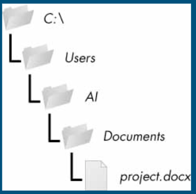

Lesson 9: File Paths
File Paths
A file path is the route you specify to the computer in order to locate a file.
In the example below, the absolute path of the "project.docx" file is C:\Users\Al\Documents\project.docx.
If you were working in the "Al" folder, you could find project.docx's relative path by telling the computer Documents\project.docx.
Example:

When to Use Absolute and Relative Paths
It is best to use absolute paths when referring to files that exist outside of your current project or computer.
Relative paths are often preferred when referring to files that are within your current project or server. This way, if the folder containing the files is moved, the links between the files won't break. Additionally, relative paths ensure that users accessing the files remotely won't face issues linking them.